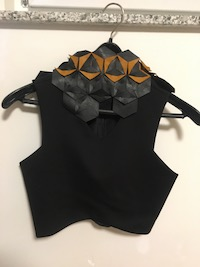

MODULAR PATTERNS
5 November 2018
Description of the process:
- Design the pattern you want to make using Ai. There is two types of pieces in order to make them match with each other: male and female.
- In settings, choose print as a vector, and change the parameters of speed, power and frequence to the ones adecuated for the fabric selected. It is important to do a previous color maping, choosing different values for the parameters and see which values are better for the fabric to be laser cutter, that in that case it is going to be leather.
- Turn on the filter of the laser cutter before statt cutting. Then, close the door of the machine and press the reen botton to make it start.

- Get the pieces cutted.
- Start matching the pieces to see how the pattern works.
- Begint to configurate the piece of clothing. I am going to make a crop top, and I will use one as a reference.

- Keep matching the pieces and configurating the piece of clothing.
- The crop top is done and ready to wear.
With the leather left overs of the laser cutter I am going to do a glove.
First, take the piece of cutted leather and see what can you do with it.

Cut the parts that are not necessary for the task.

Now we are going to saw the laces to the sides, in order be able to wear it.
Try it on!